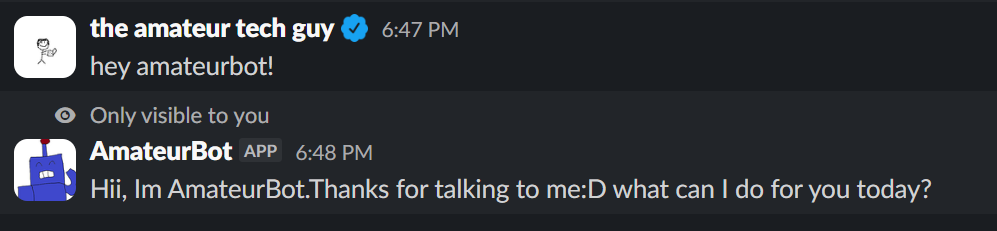
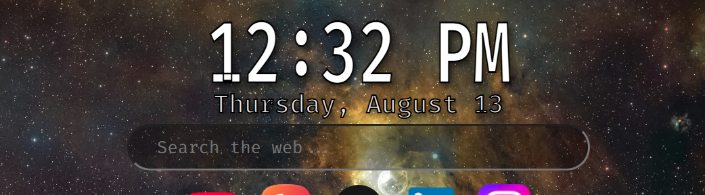
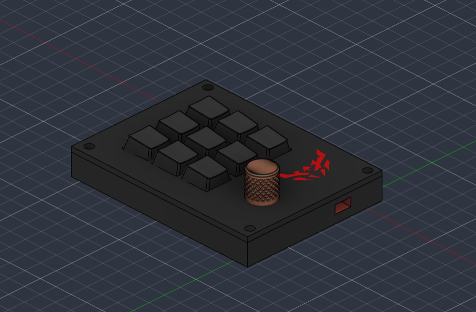
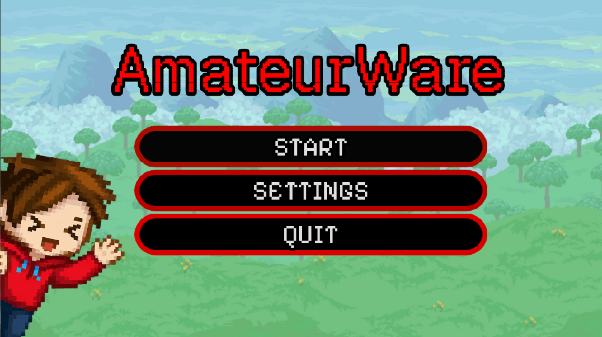
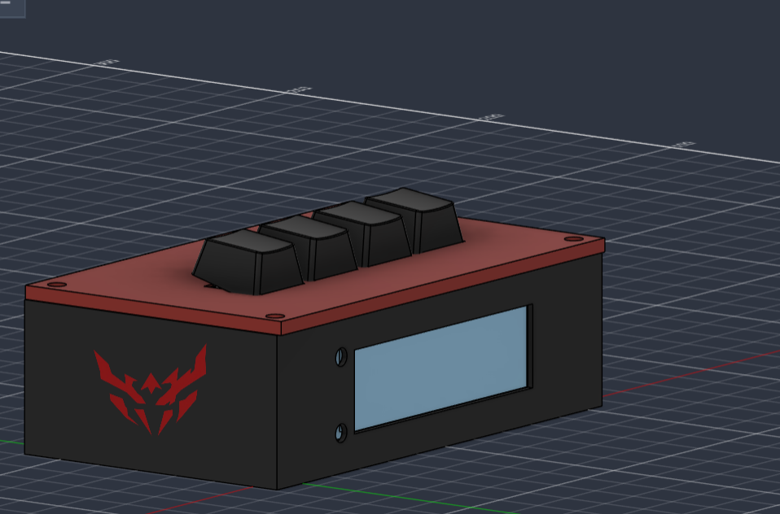
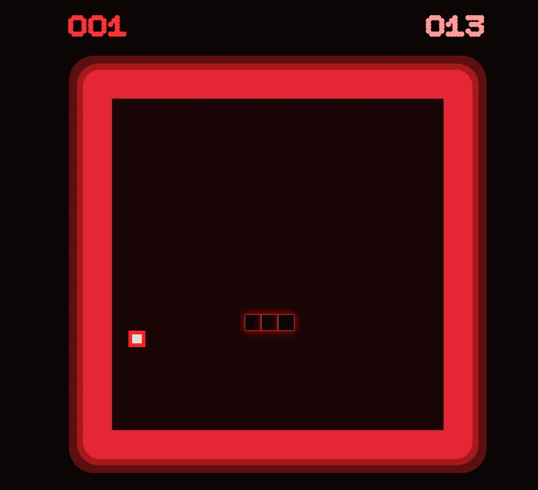
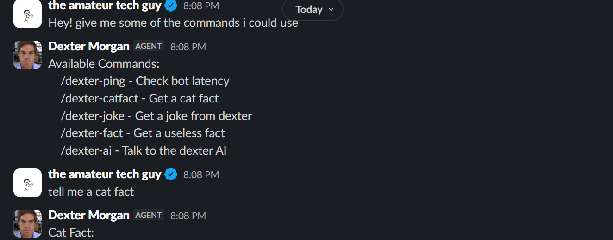
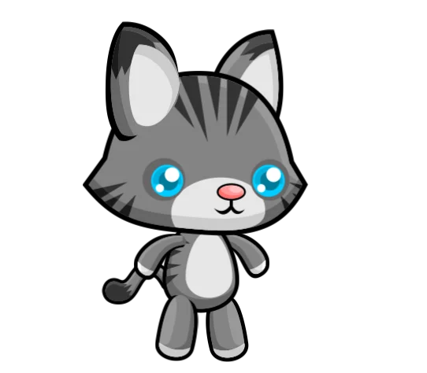

AmateurWeb
This was honestly my first ever website, it was a personal portfolio one, like this. and I felt so proud the day I made it thanks to hackclub's encouragement

AmateurBot
This too was also my first slack bot, I made it have multiple functions, but it was very limited unfortunately

AmateurTab
AmateurTab was a mission assigned by stardance, I made it my own by using an unsplash API to change the background each time and also a google API for the search bar!

AmateurPad
This being my first ever hardware project, it was MADLY difficult I took 30 hours to make it, but it goes without a doubt to say that I am very proud of it, one of my biggest acheivements

AmateurWare
My first time using godot, it was definitely super fun to make, I got addicted to playing my own games which was actually kinda crazy haha

AmateurAlarm
One of my favorite projects, it only took me 10 hours because I gained all the hardware experience needed from AmateurPad

Snakey
A web snake game that was surprisingly easy to make, shoutout to the phantom team for approving my time!

DexterBot
One of the most frustrating projects, still in progress but I ran into many issues with the AI and this has to be the hardest bot I'll ever make

Amateurie
One of the cutest things I made, I really love seeing him around my screen he keeps me company and he's just so cute